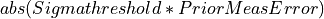
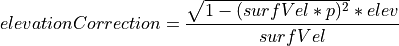

iLoc¶
Locator in SeisComP implemented by the plugin lociloc.
Description¶
iLoc is a locator developed by István Bondár which has been integrated into SeisComP by gempa GmbH [28]. It is invoked by the wrapper plugin lociloc - the interface between SeisComP and iLoc. Read the sections Setup in SeisComP and Application in SeisComP for configuring and using iLoc in SeisComP.
Background¶
iLoc is a locator tool for locating seismic, hydroacoustic and infrasound sources based on phase picks. iLoc is based on the location algorithm developed by Bondár and McLaughlin [34] and implemented at the International Seismological Center, (ISC [14], Bondár et al. [36]) with numerous new features added (Bondár et al. [36]). The stand-alone iLoc code can be downloaded from the iLoc SeisCode [30] software repository.
Among the major advantages of using iLoc is that it can
Use any phases with valid travel-time predictions;
Use seismic, hydroacoustic and infrasound arrival time, slowness and azimuth observations in location;
Use travel-time predictions from a global 3D upper mantle velocity model;
Use a local 1D velocity model;
Account for the correlated travel-time prediction error structure due to unmodeled 3D velocity heterogeneities;
Check if the data has sufficient resolution to determine the hypocenter depth;
Identify ground truth (GT5) candidate events.
History¶
Originally developed for U.S. Air Force Research Laboratory, today the standard at the International Seismological Centre (ISC) replacing previous routines
Open source, download website: iLoc SeisCode [30]
Integrated first in SeisComP3 in 2019
Basis of the EMSC crowd-source locator, CsLoc since 2019
EMSC standard as of 2022
iLoc in a nutshell¶
Accounts for correlated travel-time prediction errors
Initial hypocenter guess from Neighborhood Algorithm search
Linearised inversion using a priori estimate of the full data covariance matrix Attempts for free-depth solution only if there is depth resolution
Default depth is derived from historical seismicity
Seismic, hydroacoustic and infrasound observations
Arrival time, slowness and azimuth measurements
Uses most ak135 or iasp91 Earth model phases in locating
Integrated RSTT travel-time predictions
RSTT is default for Pn/Sn and Pg/Lg
Local velocity model and local phase TT predictions for Pg/Sg/Lg, Pb/Sb, Pn/Sn.
Algorithms¶
This section describes some of the principles. The full description of the applied algorithms can be found in the iLoc documentation provided along with the package on the iLoc SeisCode [30] website.
Neighbourhood algorithm¶
Linearized inversion algorithms are quite sensitive to the initial guess. In order
to find an initial hypocenter guess for the linearized inversion the Neigbourhood
Algorithm (Sambridge [59]; Sambridge and Kennett [60]) is performed
around the starting hypocentre if iLoc.profile.$name.DoGridSearch is active.
During the NA search, we identify the phases with respect to each trial hypocenter
and calculate the misfit of the trial hypocenter. The misfit is defined as the sum
of the iLoc.profile.$name.NAlpNorm residual and a penalty factor that
penalizes against freakish local minima provided by just a few phases. In the first
iteration iLoc.profile.$name.NAinitialSample hypocenter hypotheses are tested,
while the subsequent iterations consider the best iLoc.profile.$name.NAcells
solutions and resample the search space around them with
iLoc.profile.$name.NAnextSample hypocenter hypotheses. The solution with
the lowest misfit after iLoc.profile.$name.NAiterMax iteration is taken
as the initial hypocenter for the linearized least squares inversion.
A grid search can be performed to obtain a better initial hypocenter
guess. The search is performed around the starting hypocenter.
For a very exhaustive search one can increase iLoc.profile.$name.NAinitialSample,
iLoc.profile.$name.NAnextSample and iLoc.profile.$name.NAcells
values. Note that the maximum value for iLoc.profile.$name.NAinitialSample
is around 3500 before hitting memory limits.
An exhaustive search will
considerably slow iLoc down, especially when RSTT predictions are
enabled (iLoc.profile.$name.UseRSTT, iLoc.profile.$name.UseRSTTPnSn,
iLoc.profile.$name.UseRSTTPgLg).
Depth resolution¶
Depth resolution can be provided by a local network, depth phases, core reflections and to a lesser extent near-regional secondary phases. iLoc attempts for a free-depth solution if the set of :term:arrivals meets at least one of the following conditions:
Number of pairs of defining P and depth phases

iLoc.profile.$name.MinDepthPhasesNumber of pairs of defining P and core phases
iLoc.profile.$name.MinCorePhasesNumber of pairs of defining P and S phases
iLoc.profile.$name.MinSPpairswithin a regional distance ofiLoc.profile.$name.MaxLocalDistDegdegreeNumber of defining P phases
iLoc.profile.$name.MinLocalStationswithin a local distance ofiLoc.profile.$name.MinLocalStationsdegree.
If there is insufficient depth resolution provided by the data, or the depth uncertainty for a free-depth solution exceeds a threshold, the hypocentre depth is set to the depth from the default depth grid if a grid point for the epicentre location exists; otherwise it is set to a depth Bolton et al. [33] assigned to the corresponding Flinn-Engdahl geographic region (Young et al. [65]). The default depth grid (Bondár and Storchak [37]) is defined on a 0.5º x 0.5º grid as the median of all depths in the cell, provided that there were at least five events in the cell, and the 75–25 percent quartile range was less than 100 km. The latter constraint is imposed to avoid regions with both shallow and deep seismicity. Anthropogenic events are fixed to the surface. Finally, the user can fix the depth to the initial depth.
iLoc reports back how the depth was determined in the FixedDepthType parameter:
0 - free depth solution
1 - airquake/deepquake, depth fixed to surface/MaxHypocenterDepth
2 - depth fixed to depth reported by an agency (not used in SeisComP)
3 - depth fixed to depth-phase depth
4 - anthropogenic event, depth fixed to surface
5 - depth fixed to default depth grid depth
6 - no default depth grid point exists, fixed to median reported depth
7 - no default depth grid point exists, fixed to GRN-dependent depth
8 - depth fixed by user provided value
Linearized inversion¶
Once the Neighbourhood search get close to the global optimum, iloc switches to an iterative linearized least-squares inversion of travel-time, azimuth and slowness observations (Bondár and McLaughlin [35]; Bondár and Storchak [37]) to obtain the final solution for the hypocenter.
The convergence test after (Paige and Saunders [54]) is applied after every iteration. Once a convergent solution is obtained, the location uncertainty is defined by the a posteriori model covariance matrix. The model covariance matrix yields the four-dimensional error ellipsoid whose projections provide the two-dimensional error ellipse and one-dimensional errors for depth and origin time. These uncertainties are scaled to the 90% confidence level (Jordan and Sverdrup [47]).
The final hypocentre is tested against the ground truth selection criteria (Bondár and McLaughlin [34]), and it is reported as a GT5candidate if the solution meets the GT5 criteria.
Some important parameters are:
iLoc.profile.$name.SigmaThreshold: Residuals that exceed  are made non-defining.iLoc.profile.$name.MinNdefPhases: Minimum number of observations required to attempt for a solution.
If the number of defining arrival times exceed
iLoc.profile.$name.MinNdefPhases, then slowness observations will not
be used in the location.
Integration into SeisComP¶
Integration of iLoc into SeisComP is provided by an external library of routines (iLoc SeisCode [30]).
SeisComP modules call iLoc routines by passing the objects via the plugin lociloc installed in
@DATADIR@/plugins/lociloc.so.iLoc returns objects to SeisComP for integration.
The iLoc implementation in SeisComP retains all original iLoc functionalities.
Read the section Setup in SeisComP for the installation of the iLoc library and the configuration in SeisComP.
Velocity models¶
iLoc ships with the global models iasp91 and ak135 as well as with regional seismic travel-time tables, RSTT, which, if activated by configuration, replaces the global models in areas where they are defined.
Global models¶
The global models iasp91 and ak135 and RSTT are available by default without further configuration.
RSTT¶
RSTT are available in @DATADIR@/iloc/RSTTmodels/pdu202009Du.geotess.
Custom RSTT can be integrated into iLoc and provided to SeisComP.
For adding custom RSTT to iLoc read the original iLoc documentation from the
iLoc SeisCode [30] software repository.
The usage of RSTT is controlled per iLoc profile by global configuration parameters
Local velocity models¶
Custom local velocity models can be provided by a file in
@DATADIR@/iloc/localmodels. Example file
@DATADIR@/iloc/localmodels/test.localmodel.dat:
#
# test
#
# number of layers
4
0.000 5.8000 3.4600 x
20.000 6.5000 3.8500 CONRAD
45.000 8.0400 4.4800 MOHO
77.500 8.0400 4.4800 x
Once added, the velocity can be configured in SeisComP as set out in section Setup in SeisComP.
Station elevation¶
iLoc considers station elevation. It calculates the elevation correction, elevationCorrection, for a station as

where
elev: elevation of the station
p: the ray parameter (horizontal slowness)
surfVel: layer P or S velocity of at the surface depending on the last lag of the phase name.
Note
iLoc does not allow airquakes or source locations above datum (0 km). If the depth of an origin becomes negative, iLoc fixes the depth to 0 km and the depth type of the origin will be “operator assigned”.
Resources¶
iLoc has taken advantage of many publications or has been cited therein. Read the section References for a list.
Setup in SeisComP¶
Add the plugin lociloc to the global configuration, e.g. in
@SYSTEMCONFIGDIR@/global.cfg:plugins = ${plugins}, lociloc
Download iLoc data files from the iLoc SeisCode [30] website. Extract and install them in
@DATADIR@/iloc. Ensure to download a valid file. Example:mkdir $SEISCOMP_ROOT/share/iloc wget -O /tmp/iLocAuxDir.tgz "http://iloc.geochem.hu/data/iLocAuxDir4.1.tgz" tar xvf /tmp/iLocAuxDir.tgz -C $SEISCOMP_ROOT/share/iloc
Note
Check the iLoc SeisCode [30] website for updates before downloading the file since the version number, hence the name of the download file may change.
Instead of generating the
SEISCOMP_ROOT/share/iloc/iLocAuxDirdirectory, you can also create a symbolic link and maintain always the same iLoc version in SeisComP and externally.
Add and configure iLoc profiles for the velocity models. The global models iasp91 and ak135 are considered by default with default configuration parameters even without setting up iasp91/ak135 profiles. You may, however, create these profiles for their customization.
Create new profiles or consider existing ones for adjusting their configuration:
iLoc.profile.$name.globalModel: The name of the global model, e.g. iasp91 or ak135.Consider the RSTT parameters.
iLoc.profile.$name.LocalVmodel,iLoc.profile.$name.UseLocalTTandiLoc.profile.$name.MaxLocalTTDelta: The definition of a local velocity model: model file, default usability, distance range.iLoc.profile.$name.DoNotRenamePhases: Renaming seismic phases automatically impacts the usability of the origins with other locators and locator profiles. Activate the parameter to avoid phase renaming.Consider the remaining parameters.
Note
Creating the profiles allows using the same global velocity model along with different local models or RSTT settings in separate profiles.
Test the locator using scolv or configure with screloc or other locator modules.
Application in SeisComP¶
Once the lociloc plugin is configured, the iLoc locator can be applied
For using iLoc in scolv select it in the locator menu of the Location tab
Select iLoc locator¶
along with a profile:
Select iLoc profile¶
The parameters for iLoc can be adjusted by pressing the wrench button next to the locator selection combo box
Start the settings dialog¶
which opens the iLoc settings dialog:
Adjust the settings and click OK to confirm¶
Warning
By default, automatic phase renaming by iLoc is active. The renaming may change the phase names, e.g. from P to Pn.
Renaming seismic phases automatically will later impact the usability of the new origins with other locators and locator profiles. Deactivate DoNotRenamePhases to avoid phase renaming.
However, when deactivating, iLoc may not provide results if the initial phases do not exist in the phase table for the given source depth and epicentral distance. Example: For great source depth and small epicentral distance, the first arrival phase is p or Pn and not P but SeisComP provides P.
After relocating, the iLoc locator and the selected profile are shown in the scolv Location tab as Method and Earth model, respectively:
Information in scolv Locator tab¶
Module Configuration¶
Note
iLoc.* Locator parameters: iLoc
- iLoc.auxDir¶
Default:
@DATADIR@/iloc/iLocAuxDirType: string
iLoc directory for auxialiary files and directories. Some of them must be provided from the iLoc website. Read the documentation for their installation.
- iLoc.profiles¶
Default:
iasp91,ak135Type: list:string
iLoc profile name. Multiples names may be set separated by comma. Each profile can have different velocity or parameters.
Note
iLoc.profile.* Profiles containing the specific locator parameters. For the global models, iasp91 and ak135, profiles are automatically considered with defaults. To adjust the profile parameters the corresponding profile must be created.
Note
iLoc.profile.$name.*
$name is a placeholder for the name to be used and needs to be added to iLoc.profiles to become active.
iLoc.profiles = a,b
iLoc.profile.a.value1 = ...
iLoc.profile.b.value1 = ...
# c is not active because it has not been added
# to the list of iLoc.profiles
iLoc.profile.c.value1 = ...
- iLoc.profile.$name.Verbose¶
Default:
trueType: boolean
- iLoc.profile.$name.globalModel¶
Type: string
Name of globally applied velocity model into which RSTT or the local model is integrated. If unset, the name of the profile is considered instead.
- iLoc.profile.$name.UseRSTT¶
Default:
falseType: boolean
Use regional seismic travel-time tables
- iLoc.profile.$name.UseRSTTPnSn¶
Default:
trueType: boolean
Use regional seismic travel-time tables for Pn and Sn
- iLoc.profile.$name.UseRSTTPgLg¶
Default:
trueType: boolean
Use regional seismic travel-time tables for Pg and Lg
- iLoc.profile.$name.UseLocalTT¶
Default:
falseType: boolean
Use local velocity model if defined in LocalVmodel.
- iLoc.profile.$name.LocalVmodel¶
Type: string
Full path to a file containing the local velocity model. Requires: UseLocalTT = true. Empty string or unset or UseLocalTT = false disables using a local model in this profile.
Example:
@DATADIR@/iloc/iLocAuxDir/localmodels/model.localmodel.dat.
- iLoc.profile.$name.MaxLocalTTDelta¶
Default:
3Type: float
Unit: deg
Maximum epicentral distance for applying the local velocity model.
- iLoc.profile.$name.DoGridSearch¶
Default:
trueType: boolean
Perform neighbourhood algorithm
- iLoc.profile.$name.NAsearchRadius¶
Default:
5Type: float
Unit: deg
Neighbourhood Algorithm: Search radius around initial epicentre
- iLoc.profile.$name.NAsearchDepth¶
Default:
300Type: float
Unit: km
Neighbourhood Algorithm: Search radius around initial depth
- iLoc.profile.$name.NAsearchOT¶
Default:
30Type: float
Unit: s
Neighbourhood Algorithm: Search radius around initial origin time
- iLoc.profile.$name.NAlpNorm¶
Default:
1Type: float
Neighbourhood Algorithm: p-value for norm to compute misfit [1,2]
- iLoc.profile.$name.NAiterMax¶
Default:
5Type: integer
Neighbourhood Algorithm: Maximum number of iterations
- iLoc.profile.$name.NAcells¶
Default:
25Type: integer
Neighbourhood Algorithm: Number of cells to be resampled at each iteration
- iLoc.profile.$name.NAinitialSample¶
Default:
1000Type: integer
Neighbourhood Algorithm: Size of initial sample
- iLoc.profile.$name.NAnextSample¶
Default:
100Type: integer
Neighbourhood Algorithm: Size of subsequent samples
- iLoc.profile.$name.MinDepthPhases¶
Default:
3Type: integer
Depth resolution: Minimum number of depth phases for depdp
- iLoc.profile.$name.MaxLocalDistDeg¶
Default:
0.2Type: float
Unit: deg
Depth resolution: Maximum local distance
- iLoc.profile.$name.MinLocalStations¶
Default:
1Type: integer
Depth resolution: Minimum number of local defining stations
- iLoc.profile.$name.MaxSPDistDeg¶
Default:
2.0Type: float
Unit: deg
Depth resolution: Maximum distance for using S-P travel-time differences.
- iLoc.profile.$name.MinSPpairs¶
Default:
3Type: integer
Depth resolution: Minimum number of defining S-P phase pairs
- iLoc.profile.$name.MinCorePhases¶
Default:
3Type: integer
Depth resolution: Minimum number of defining core reflection phases
- iLoc.profile.$name.MaxShallowDepthError¶
Default:
30.0Type: float
Unit: km
Depth resolution: Maximum depth error for crustal free-depth
- iLoc.profile.$name.MaxDeepDepthError¶
Default:
60.0Type: float
Unit: km
Depth resolution: Maximum depth error for deep free-depth
Default:
trueType: boolean
Linearized inversion: Account for correlated errors
- iLoc.profile.$name.SigmaThreshold¶
Default:
6.0Type: float
Unit: s
Linearized inversion: Used to exclude big residuals from solution
- iLoc.profile.$name.AllowDamping¶
Default:
trueType: boolean
Linearized inversion: Allow damping of model vector
- iLoc.profile.$name.MinIterations¶
Default:
4Type: integer
Linearized inversion: Minimum number of iterations
- iLoc.profile.$name.MaxIterations¶
Default:
20Type: integer
Linearized inversion: Maximum number of iterations
- iLoc.profile.$name.MinNdefPhases¶
Default:
4Type: integer
Linearized inversion: Minimum number of defining phases
- iLoc.profile.$name.DoNotRenamePhases¶
Default:
falseType: boolean
Linearized inversion: Do not rename phases. Deactivating allows to rename the phases automatically for this profile.